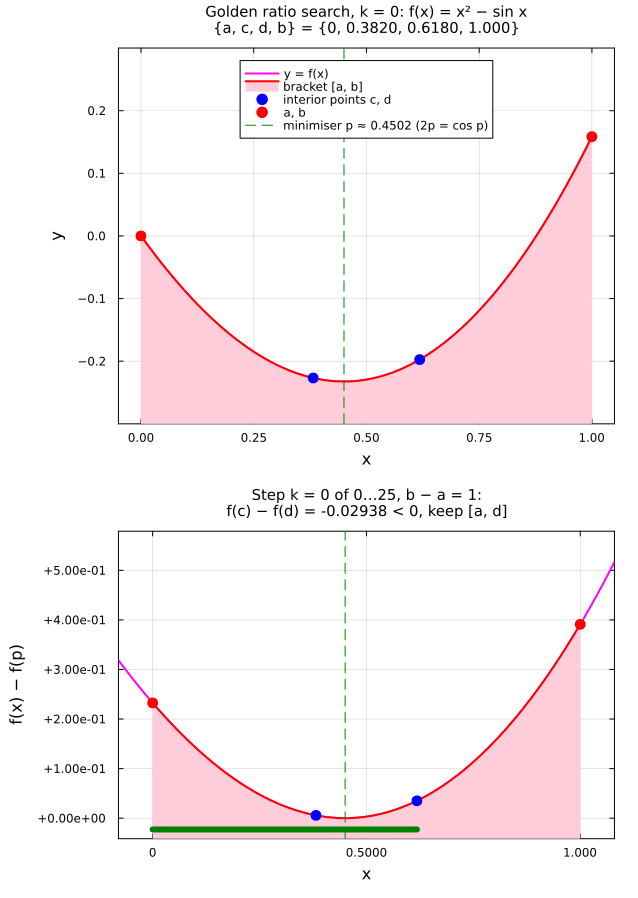
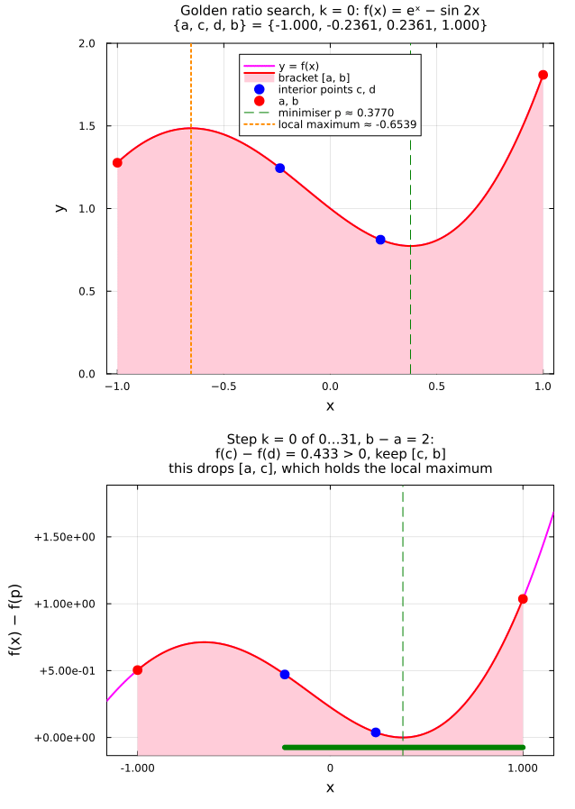

Golden Ratio Search
Source inspiration: (Mathew 2000-2019).
Description
Golden ratio search finds the minimum of a function \(f\) on an interval \([a_0, b_0]\) using only function values, no derivatives. It needs \(f\) to be unimodal on the interval: decreasing up to a single minimiser \(p\) and increasing after it. Each step evaluates \(f\) at two interior points \(c_k < d_k\) and throws away the part of the interval that cannot contain \(p\). If \(f(c_k) \le f(d_k)\) the minimiser lies in \([a_k, d_k]\), otherwise it lies in \([c_k, b_k]\).
The interior points divide every interval in the same proportions:
\[ c_k = a_k + (1 - \rho)(b_k - a_k), \qquad d_k = a_k + \rho\,(b_k - a_k), \qquad \rho = \frac{\sqrt5 - 1}{2} \approx 0.618034. \]
Because \(\rho^2 = 1 - \rho\), the interior point that survives a step is exactly an interior point of the next interval, so every step after the first costs one new function evaluation, and every step shrinks the interval by the same factor: \(b_k - a_k = \rho^k (b_0 - a_0)\). Unlike Fibonacci search, which fixes the number of steps in advance and changes the ratio at every step, the golden ratio search can simply run until the interval is shorter than a tolerance \(\delta\).
Animations
Each animation below shows the shrinking bracket of a golden ratio search. The top panel keeps the picture of Mathews’ plotting program: the graph of \(f\) in magenta, the current interval \([a_k, b_k]\) as a red arc with pink fill, red dots at \(a_k\) and \(b_k\), blue dots at the interior points \(c_k\) and \(d_k\), and the list \(\{a_k, c_k, d_k, b_k\}\) in the title. The bottom panel is new. It zooms on \([a_k, b_k]\) and plots \(f(x) - f(p)\), where \(p\) is the true minimiser (the dashed green line in both panels), so the comparison of \(f(c_k)\) with \(f(d_k)\) stays visible after the bracket has become too narrow to see in the top panel. Its title gives the step \(k\), the width \(b_k - a_k\), the sign of \(f(c_k) - f(d_k)\) and the part that is kept, which a green bar marks. In Cases 1 and 2, frame \(k\) shows row \(k\) of the example’s table. The last frame gives the endpoint that Mathews’ program returns and the midpoint of the last interval, and it is held. Points are labelled with enough significant figures to tell them apart, so the labels gain digits as the bracket shrinks. The differences in the titles and the curve in the bottom panel are evaluated in high precision at the double-precision points. Every double-precision comparison has the same sign as that high-precision difference, and a 50-digit run of each search keeps the same side at every step.
Mathews’ module has one animation, linked from the solution of Example 6. Its GIF is lost (the archive keeps only the animation’s HTML page), and so are the ten pictures of his Example 6 solution. Case 1 rebuilds it from his plotting program, which survives, and from the Example 6 text: the same function, interval, window and picture elements, and the ten pictures of his solution, the start and nine steps (how many frames his GIF had is not recorded). Cases 2 and 3 are new, with no Mathews original. Example 2’s search on \([0, 1]\), Example 3, Examples 4 and 5 (his Exercises 4 and 5) and the secant-method comparison in Example 1 are not animated. The scripts squeeze with the rule of the Description and of the algorithm below, which keeps \([a_k, d_k]\) when \(f(c_k) \le f(d_k)\); Mathews’ program keeps \([c_k, b_k]\) in a tie, but no comparison in the three runs is a tie, so both rules give the same steps. Like Mathews’ program, the scripts compute \(1 - \rho\) as \(\rho^2\) and return the endpoint with the smaller function value.
Julia source scripts that generated these animations are linked under each case.
Case 1 — Mathews’ animation, Example 6, \(f(x) = \tfrac12 + x^5 - \tfrac45 x\) on \([0, 1]\), \(9\) steps
Behavior: Mathews’ plotting program draws the starting interval and then makes max − 1 steps. His Example 6 solution has ten pictures, so max = 10, and the animation shows \(k = 0, \ldots, 9\), the rows of the Example 6 table, in his window \([-0.05, 1.05] \times [0, 0.72]\). The bracket is squeezed from the left (keep \([c_k, b_k]\)) at \(k = 0, 2, 4, 5, 8\) and from the right (keep \([a_k, d_k]\)) at \(k = 1, 3, 6, 7\), and every bracket contains \(p = \sqrt{10}/5 \approx 0.6325\). By \(k = 9\) the four dots overlap at Mathews’ scale, and the zoom panel separates them. The last interval is \([0.6262, 0.6393]\), of width \(\rho^9 = 0.01316\). Mathews’ program returns \(a_9 = 0.6262\), which is \(6.29 \times 10^{-3}\) from \(p\); the midpoint \(0.6327\) is \(2.9 \times 10^{-4}\) from \(p\).

Case 2 — Example 1, \(f(x) = x^2 - \sin x\) on \([0, 1]\), \(25\) steps (new)
Behavior: Mathews runs Example 1 for \(25\) steps, and the animation shows \(k = 0, \ldots, 25\), the rows of the Example 1 table. Every bracket contains the minimiser \(p \approx 0.450184\), the root of \(2x = \cos x\). From \(k = 10\) on the bracket is less than \(1\%\) of \([0, 1]\) (\(\rho^{10} = 0.0081\)), so its four dots overlap in the top panel. From \(k = 18\) on the two values compared differ by less than \(2 \times 10^{-9}\), and at \(k = 24\) by only \(1.19 \times 10^{-12}\), yet the zoom panel still shows which is lower. The last interval is \([0.4501790, 0.4501850]\), of width \(\rho^{25} = 5.96 \times 10^{-6}\). Mathews’ program returns \(b_{25} = 0.4501850\), which is \(1.35 \times 10^{-6}\) from \(p\); the midpoint \(0.4501820\) is \(1.63 \times 10^{-6}\) from \(p\). Mathews’ solution of Example 1 lists the steps but has no animation.

Case 3 — Example 2’s function on all of \([-1, 1]\), \(f(x) = e^x - \sin 2x\), \(\delta = \varepsilon = 10^{-6}\) (new)
Behavior: \(f\) is not unimodal on \([-1, 1]\): it rises to a local maximum at \(x \approx -0.6539\) (the dotted orange line) before it falls to the minimum at \(p \approx 0.3770\), so the guarantee of the interval-length theorem below, that every interval contains \(p\), does not apply. The first comparison, \(f(c_0) = f(-0.2361) = 1.2445 > f(d_0) = f(0.2361) = 0.8115\), keeps \([c_0, b_0] = [-0.2361, 1]\) and so drops the local maximum. On \([-0.2361, 1]\) the derivative \(f'(x) = e^x - 2\cos 2x\) changes sign only at \(p\), so \(f\) is unimodal there, and from \(k = 1\) on the run is an ordinary golden ratio search; every bracket contains \(p\). The method did not see the local maximum: the values at \(c_0\) and \(d_0\) happened to send the search the right way, which is why Example 2 calls this luck rather than a guarantee. Mathews’ stopping rule ends the search after \(31\) steps at \([0.37700182, 0.37700249]\), of width \(2\rho^{31} = 6.64 \times 10^{-7}\), and returns \(a_{31} = 0.3770018\), which is \(2.3 \times 10^{-7}\) from \(p\). The smallest difference compared, \(|f(c_{29}) - f(d_{29})| = 4.7 \times 10^{-14}\), is still more than \(400\) times the spacing of double-precision numbers near \(f(p) \approx 0.773\).

Unimodal Functions and Bracketing
The function \(f\) is unimodal on \(I = [a, b]\) if there is a unique number \(p \in I\) such that \(f\) is decreasing on \([a, p]\) and increasing on \([p, b]\).
A bracketing search keeps an interval \([a_k, b_k]\) that is known to contain \(p\) and shrinks it by comparing \(f\) at two interior points \(c_k < d_k\):
- If \(f(c_k) \le f(d_k)\), the minimum cannot lie to the right of \(d_k\). Squeeze from the right: set \(a_{k+1} = a_k\), \(b_{k+1} = d_k\).
- If \(f(c_k) > f(d_k)\), the minimum cannot lie to the left of \(c_k\). Squeeze from the left: set \(a_{k+1} = c_k\), \(b_{k+1} = b_k\).
A tie \(f(c_k) = f(d_k)\) puts \(p\) between \(c_k\) and \(d_k\), so either choice is safe; the rule above keeps \([a_k, d_k]\). Mathews’ programs keep \([c_k, b_k]\) in a tie. No comparison in the examples below is a tie, so both rules give the same steps. The method uses only comparisons of function values, so it also works when \(f\) is not differentiable.
Derivation of the Golden Ratio
Place the interior points of \([a, b]\) symmetrically, so that \(c - a = b - d\):
\[ c = a + (1 - r)(b - a), \qquad d = a + r\,(b - a), \qquad \tfrac12 < r < 1, \tag{1} \]
where \(r > \tfrac12\) keeps \(c < d\). We want the same \(r\) on every interval, and one of the old interior points must become an interior point of the new interval, so that each step needs only one new function value.
Suppose \(f(c) \le f(d)\), so the new interval is \([a, d]\), of length \(r(b - a)\). Its right interior point is \(a + r(d - a)\), and for this to be the old point \(c\) we need \(c - a = r(d - a)\), that is
\[ (1 - r)(b - a) = r \cdot r\,(b - a) \qquad\Longrightarrow\qquad r^2 + r - 1 = 0. \tag{2} \]
If instead \(f(c) > f(d)\), the new interval is \([c, b]\), also of length \(r(b - a)\), and its left interior point \(c + (1 - r)(b - c)\) must be the old point \(d\). Since \(d - c = (2r - 1)(b - a)\) and \(b - c = r(b - a)\), this gives \(2r - 1 = (1 - r)\,r\), which is the same equation (2). Its roots are \(r = (-1 \pm \sqrt5)/2\), and the root in \((\tfrac12, 1)\) is
\[ \rho = \frac{\sqrt5 - 1}{2} = 0.6180339887\ldots, \qquad \rho^2 = 1 - \rho = 0.3819660113\ldots \tag{3} \]
Mathews calls \(\rho\) the golden ratio. The name is more often given to its reciprocal \(\phi = 1/\rho = (1 + \sqrt5)/2 = 1.6180339887\ldots\); either way, \(\rho\) is the factor by which the interval shrinks. Equation (2) is the special case \(r_1 = r_0\) of the equation \(r_1 = (1 - r_0)/r_0\) on the Fibonacci search page.
If \(f\) is unimodal on \([a_0, b_0]\) (and the comparisons are exact), every interval \([a_k, b_k]\) contains the minimiser \(p\), and
\[ b_k - a_k = \rho^k\,(b_0 - a_0). \tag{4} \]
The midpoint \((a_k + b_k)/2\) is within \(\tfrac12 \rho^k (b_0 - a_0)\) of \(p\). The interval is shorter than a tolerance \(\delta\) once
\[ k \ge \frac{\ln\bigl(\delta / (b_0 - a_0)\bigr)}{\ln \rho}. \tag{5} \]
This is a general result. The interval shrinks by the same factor \(\rho \approx 0.618\) at every step whatever \(f\) is, so the convergence is linear, and each extra decimal digit of accuracy costs \(\ln 10 / \ln \phi \approx 4.78\) steps.
Algorithm
Given \(f\) unimodal on \([a_0, b_0]\) and a tolerance \(\delta\) (or a number of steps):
- Compute \(c_0 = a_0 + (1 - \rho)(b_0 - a_0)\) and \(d_0 = a_0 + \rho(b_0 - a_0)\), and evaluate \(f(c_0)\), \(f(d_0)\).
- For \(k = 0, 1, 2, \ldots\) until \(b_k - a_k \le \delta\):
- if \(f(c_k) \le f(d_k)\): set \(a_{k+1} = a_k\), \(b_{k+1} = d_k\), \(d_{k+1} = c_k\), and compute the new point \(c_{k+1} = a_{k+1} + (1 - \rho)(b_{k+1} - a_{k+1})\);
- otherwise: set \(a_{k+1} = c_k\), \(b_{k+1} = b_k\), \(c_{k+1} = d_k\), and compute the new point \(d_{k+1} = a_{k+1} + \rho(b_{k+1} - a_{k+1})\);
- evaluate \(f\) at the one new point.
- Return an approximation to \(p\) from the last interval, for example its midpoint.
After \(K\) steps the method has used \(K + 2\) function evaluations and the interval has length \(\rho^K (b_0 - a_0)\). The values \(f(c_K)\) and \(f(d_K)\) are already known, so one more comparison shrinks the interval to \(\rho^{K+1}(b_0 - a_0)\) for free. With \(N = K + 2\) evaluations the bracket is therefore \(\rho^{N-1}(b_0 - a_0)\), the figure used on the Fibonacci search page.
Mathews gives two programs:
GoldenSearch[a0, b0, max]makes exactlymaxsteps.GoldenSearch[a0, b0, δ, ε]continues while \(\lvert f(b_k) - f(a_k) \rvert > \varepsilon\) or \(b_k - a_k > \delta\), so it stops once both \(b_k - a_k \le \delta\) and \(\lvert f(b_k) - f(a_k) \rvert \le \varepsilon\).
Both also evaluate \(f(a_0)\) and \(f(b_0)\) (so \(K + 4\) evaluations in all), keep \([c_k, b_k]\) in a tie, print the list \(\{a_k, c_k, d_k, b_k\}\) at every step, and return whichever endpoint, \(a_k\) or \(b_k\), has the smaller function value. The returned endpoint is within \(b_k - a_k\) of \(p\). The midpoint has half that error bound.
Example 1 — Minimise \(x^2 - \sin x\) on \([0, 1]\)
Find the minimum of the unimodal function
\[ f(x) = x^2 - \sin x \]
on \([0, 1]\). Mathews runs this example for \(25\) steps. The function is unimodal on \([0, 1]\) because \(f''(x) = 2 + \sin x \ge 2 > 0\) there.
Step 1 (first interior points):
\[ c_0 = 0 + (1 - \rho)(1 - 0) = \frac{3 - \sqrt5}{2} \approx 0.3819660, \qquad d_0 = 0 + \rho\,(1 - 0) = \frac{\sqrt5 - 1}{2} \approx 0.6180340, \]
\[ f(c_0) = -0.2268474828, \qquad f(d_0) = -0.1974679332. \]
Step 2 (first squeeze): \(f(c_0) \le f(d_0)\), so squeeze from the right: \([a_1, b_1] = [0, 0.6180340]\) and \(d_1 = c_0 = 0.3819660\). The new point is
\[ c_1 = 0 + (1 - \rho)(0.6180340 - 0) = 0.2360680, \qquad f(c_1) = -0.1781533860. \]
Step 3 (second squeeze): \(f(c_1) = -0.1781533860 > f(d_1) = -0.2268474828\), so squeeze from the left: \([a_2, b_2] = [0.2360680, 0.6180340]\), \(c_2 = d_1 = 0.3819660\), and the new point is
\[ d_2 = 0.2360680 + \rho\,(0.6180340 - 0.2360680) = 0.4721360, \qquad f(d_2) = -0.2318772406. \]
Continuing in the same way gives the full table. The last column says which part is kept for the next row; \([a_k, d_k]\) is a squeeze from the right and \([c_k, b_k]\) one from the left. The interval in row \(k\) has length \(\rho^k\).
| \(k\) | \(a_k\) | \(c_k\) | \(d_k\) | \(b_k\) | \(f(c_k)\) | \(f(d_k)\) | \(f(c_k) - f(d_k)\) | keep |
|---|---|---|---|---|---|---|---|---|
| 0 | 0.0000000 | 0.3819660 | 0.6180340 | 1.0000000 | -0.2268474828 | -0.1974679332 | \(-2.94 \times 10^{-2}\) | \([a_k,d_k]\) |
| 1 | 0.0000000 | 0.2360680 | 0.3819660 | 0.6180340 | -0.1781533860 | -0.2268474828 | \(4.87 \times 10^{-2}\) | \([c_k,b_k]\) |
| 2 | 0.2360680 | 0.3819660 | 0.4721360 | 0.6180340 | -0.2268474828 | -0.2318772406 | \(5.03 \times 10^{-3}\) | \([c_k,b_k]\) |
| 3 | 0.3819660 | 0.4721360 | 0.5278640 | 0.6180340 | -0.2318772406 | -0.2250488223 | \(-6.83 \times 10^{-3}\) | \([a_k,d_k]\) |
| 4 | 0.3819660 | 0.4376941 | 0.4721360 | 0.5278640 | -0.2322759425 | -0.2318772406 | \(-3.99 \times 10^{-4}\) | \([a_k,d_k]\) |
| 5 | 0.3819660 | 0.4164079 | 0.4376941 | 0.4721360 | -0.2310823806 | -0.2322759425 | \(1.19 \times 10^{-3}\) | \([c_k,b_k]\) |
| 6 | 0.4164079 | 0.4376941 | 0.4508497 | 0.4721360 | -0.2322759425 | -0.2324650349 | \(1.89 \times 10^{-4}\) | \([c_k,b_k]\) |
| 7 | 0.4376941 | 0.4508497 | 0.4589803 | 0.4721360 | -0.2324650349 | -0.2323712550 | \(-9.38 \times 10^{-5}\) | \([a_k,d_k]\) |
| 8 | 0.4376941 | 0.4458247 | 0.4508497 | 0.4589803 | -0.2324424539 | -0.2324650349 | \(2.26 \times 10^{-5}\) | \([c_k,b_k]\) |
| 9 | 0.4458247 | 0.4508497 | 0.4539553 | 0.4589803 | -0.2324650349 | -0.2324482461 | \(-1.68 \times 10^{-5}\) | \([a_k,d_k]\) |
| 10 | 0.4458247 | 0.4489303 | 0.4508497 | 0.4539553 | -0.2324636630 | -0.2324650349 | \(1.37 \times 10^{-6}\) | \([c_k,b_k]\) |
| 11 | 0.4489303 | 0.4508497 | 0.4520360 | 0.4539553 | -0.2324650349 | -0.2324613965 | \(-3.64 \times 10^{-6}\) | \([a_k,d_k]\) |
| 12 | 0.4489303 | 0.4501166 | 0.4508497 | 0.4520360 | -0.2324655697 | -0.2324650349 | \(-5.35 \times 10^{-7}\) | \([a_k,d_k]\) |
| 13 | 0.4489303 | 0.4496635 | 0.4501166 | 0.4508497 | -0.2324652458 | -0.2324655697 | \(3.24 \times 10^{-7}\) | \([c_k,b_k]\) |
| 14 | 0.4496635 | 0.4501166 | 0.4503966 | 0.4508497 | -0.2324655697 | -0.2324655199 | \(-4.98 \times 10^{-8}\) | \([a_k,d_k]\) |
| 15 | 0.4496635 | 0.4499435 | 0.4501166 | 0.4503966 | -0.2324655050 | -0.2324655697 | \(6.47 \times 10^{-8}\) | \([c_k,b_k]\) |
| 16 | 0.4499435 | 0.4501166 | 0.4502235 | 0.4503966 | -0.2324655697 | -0.2324655732 | \(3.53 \times 10^{-9}\) | \([c_k,b_k]\) |
| 17 | 0.4501166 | 0.4502235 | 0.4502897 | 0.4503966 | -0.2324655732 | -0.2324655615 | \(-1.17 \times 10^{-8}\) | \([a_k,d_k]\) |
| 18 | 0.4501166 | 0.4501827 | 0.4502235 | 0.4502897 | -0.2324655752 | -0.2324655732 | \(-1.94 \times 10^{-9}\) | \([a_k,d_k]\) |
| 19 | 0.4501166 | 0.4501574 | 0.4501827 | 0.4502235 | -0.2324655743 | -0.2324655752 | \(8.33 \times 10^{-10}\) | \([c_k,b_k]\) |
| 20 | 0.4501574 | 0.4501827 | 0.4501983 | 0.4502235 | -0.2324655752 | -0.2324655749 | \(-2.61 \times 10^{-10}\) | \([a_k,d_k]\) |
| 21 | 0.4501574 | 0.4501730 | 0.4501827 | 0.4501983 | -0.2324655750 | -0.2324655752 | \(1.35 \times 10^{-10}\) | \([c_k,b_k]\) |
| 22 | 0.4501730 | 0.4501827 | 0.4501886 | 0.4501983 | -0.2324655752 | -0.2324655751 | \(-2.99 \times 10^{-11}\) | \([a_k,d_k]\) |
| 23 | 0.4501730 | 0.4501790 | 0.4501827 | 0.4501886 | -0.2324655751 | -0.2324655752 | \(2.48 \times 10^{-11}\) | \([c_k,b_k]\) |
| 24 | 0.4501790 | 0.4501827 | 0.4501850 | 0.4501886 | -0.2324655752 | -0.2324655752 | \(-1.19 \times 10^{-12}\) | \([a_k,d_k]\) |
| 25 | 0.4501790 | 0.4501813 | 0.4501827 | 0.4501850 | -0.2324655752 | -0.2324655752 | \(5.57 \times 10^{-12}\) | — |
From \(k = 18\) on, \(f(c_k)\) and \(f(d_k)\) share at least their first eight decimals, and at \(k = 24\) and \(25\) they are equal to the ten decimals shown; the difference column shows which is smaller. A run of the search in 50-digit arithmetic makes the same choice at every step.
Result: after \(25\) steps and \(27\) function evaluations at interior points,
\[ [a_{25}, b_{25}] = [0.4501790,\ 0.4501850], \qquad b_{25} - a_{25} = \rho^{25} = 5.96 \times 10^{-6}, \]
\[ f(a_{25}) = -0.232465575132, \qquad f(b_{25}) = -0.232465575156. \]
The two endpoint values agree in their first ten decimals (they differ by \(2.4 \times 10^{-11}\)). Mathews’ program returns the endpoint with the smaller value,
\[ \boxed{\,p \approx b_{25} = 0.4501850, \qquad f(p) \approx -0.232465575156\,} \]
and the midpoint of the last interval is \(0.4501820\).
Verification: the minimiser solves \(f'(x) = 2x - \cos x = 0\). Solving this to high precision gives
| Quantity | Value |
|---|---|
| True minimiser \(p\) | \(0.4501836113\) |
| True minimum \(f(p)\) | \(-0.2324655752\) |
| \(f''(p) = 2 + \sin p\) | \(2.435 > 0\) |
| Error of the returned endpoint \(\lvert b_{25} - p \rvert\) | \(1.35 \times 10^{-6} \le b_{25} - a_{25} = 5.96 \times 10^{-6}\) \(\checkmark\) |
| Error of the midpoint | \(1.63 \times 10^{-6} \le \tfrac12 (b_{25} - a_{25}) = 2.98 \times 10^{-6}\) \(\checkmark\) |
| \(f(b_{25}) - f(p)\) | \(2.2 \times 10^{-12}\) |
| \(f'\) at the last interval ends | \(f'(a_{25}) = -1.12 \times 10^{-5} < 0\), \(f'(b_{25}) = 3.30 \times 10^{-6} > 0\) \(\checkmark\) |
The sign change of \(f'\) confirms that the last interval contains the minimiser, and \(p\) lies inside every interval \([a_k, b_k]\) of the table.
Why the function values agree so closely. Near the minimum, \(f(x) - f(p) \approx \tfrac12 f''(p)(x - p)^2\) (a general Taylor estimate). The endpoint \(a_{25}\) is \(4.6 \times 10^{-6}\) from \(p\), yet \(f(a_{25}) - f(p) = 2.6 \times 10^{-11}\): the function is flat near its minimum, so the function values pin down \(p\) much less precisely than they pin down \(f(p)\). Mathews notes that this flatness limits the accuracy a search method can reach.
Comparison with the secant method
Mathews also finds this minimum by solving \(f'(x) = 2x - \cos x = 0\) with the secant method,
\[ p_{k+1} = p_k - \frac{f'(p_k)\,(p_k - p_{k-1})}{f'(p_k) - f'(p_{k-1})}, \qquad k = 1, 2, \ldots, \]
starting from \(p_0 = 0\) and \(p_1 = 1\), where \(f'(0) = -1 < 0\) and \(f'(1) = 1.4596977 > 0\) bracket a root.
| \(k\) | \(p_k\) | \(f'(p_k) = 2p_k - \cos p_k\) | \(\lvert p_k - p \rvert\) |
|---|---|---|---|
| 0 | 0.0000000000000 | \(-1.000\) | \(4.50 \times 10^{-1}\) |
| 1 | 1.0000000000000 | \(1.460\) | \(5.50 \times 10^{-1}\) |
| 2 | 0.4065540258812 | \(-1.054 \times 10^{-1}\) | \(4.36 \times 10^{-2}\) |
| 3 | 0.4465123272894 | \(-8.934 \times 10^{-3}\) | \(3.67 \times 10^{-3}\) |
| 4 | 0.4502137087060 | \(7.329 \times 10^{-5}\) | \(3.01 \times 10^{-5}\) |
| 5 | 0.4501835908417 | \(-4.981 \times 10^{-8}\) | \(2.05 \times 10^{-8}\) |
| 6 | 0.4501836112948 | \(-2.771 \times 10^{-13}\) | \(1.14 \times 10^{-13}\) |
After five secant steps \(p_6\) is within \(1.1 \times 10^{-13}\) of \(p\), and \(f''(p_6) = 2.435 > 0\) confirms a minimum by the second derivative test. The golden ratio search is much slower here: after \(25\) steps its interval is still \(6 \times 10^{-6}\) wide. Its advantage, as Mathews points out, is that it needs only values of \(f\), so it applies when \(f\) is not differentiable.
Notes on Mathews’ numbers. The module’s printed list for this example agrees with the table above at all \(26\) rows (to the six decimals it prints for the points and eight for the function values). The textbook version of the example (Mathews and Fink, Numerical Methods Using Matlab, 4th ed., Section 8.1, linked from the module as its proof page) stops at \(k = 23\); the rows it shows agree with the table up to \(k = 22\). Its row \(k = 23\), however, is \(\{0.4501827, 0.4501886, 0.4501923, 0.4501983\}\), the result of a squeeze from the left at \(k = 22\). Since \(f(c_{22}) - f(d_{22}) = -3.0 \times 10^{-11} < 0\), the correct step is a squeeze from the right, which gives the row \(\{0.4501730, 0.4501790, 0.4501827, 0.4501886\}\) above. Both intervals have length \(1.56 \times 10^{-5}\) and both contain \(p\). The book also prints \(c_0 \approx 0.38919660\), a typo for \((3 - \sqrt5)/2 \approx 0.3819660\).
This is also Example 1 of the Fibonacci search page. That search (\(n = 21\)) makes \(18\) comparisons, \(k = 0, \ldots, 17\), and keeps the same side as the golden ratio search at every one of them.
Example 2 — Local minimum of \(e^x - \sin 2x\) over \([-1, 1]\)
Find the local minimum of
\[ f(x) = e^x - \sin 2x \]
over \([-1, 1]\). Here \(f'(x) = e^x - 2\cos 2x\), and \(f\) is not unimodal on \([-1, 1]\): it has a local maximum at \(x \approx -0.6539\) and a local minimum at \(x \approx 0.3770\). Mathews plots \(f\) and picks a smaller interval for the search, but the image with his interval and his call to the program are lost. We search \([0, 1]\), where \(f'(0) = -1 < 0 < f'(1) = 3.55\) and \(f''(x) = e^x + 4\sin 2x \ge 1\) (both terms are non-negative, and \(e^x \ge 1\)), so \(f\) is unimodal there. We stop with \(\delta = \varepsilon = 10^{-6}\), the tolerances of Mathews’ Examples 3–5.
Number of steps: by (5), \(k \ge \ln(10^{-6}) / \ln\rho = 28.71\), so the interval first becomes shorter than \(10^{-6}\) at \(k = 29\) (\(\rho^{28} = 1.41 \times 10^{-6}\), \(\rho^{29} = 8.70 \times 10^{-7}\)). By then \(\lvert f(b_k) - f(a_k) \rvert\) is far below \(\varepsilon\), so the search makes \(K = 29\) steps.
| \(k\) | \(a_k\) | \(c_k\) | \(d_k\) | \(b_k\) | \(f(c_k)\) | \(f(d_k)\) | \(f(c_k) - f(d_k)\) | keep |
|---|---|---|---|---|---|---|---|---|
| 0 | 0.0000000 | 0.3819660 | 0.6180340 | 1.0000000 | 0.773396102 | 0.910777373 | \(-1.37 \times 10^{-1}\) | \([a_k,d_k]\) |
| 1 | 0.0000000 | 0.2360680 | 0.3819660 | 0.6180340 | 0.811470784 | 0.773396102 | \(3.81 \times 10^{-2}\) | \([c_k,b_k]\) |
| 2 | 0.2360680 | 0.3819660 | 0.4721360 | 0.6180340 | 0.773396102 | 0.793345116 | \(-1.99 \times 10^{-2}\) | \([a_k,d_k]\) |
| 3 | 0.2360680 | 0.3262379 | 0.3819660 | 0.4721360 | 0.778589501 | 0.773396102 | \(5.19 \times 10^{-3}\) | \([c_k,b_k]\) |
| 4 | 0.3262379 | 0.3819660 | 0.4164079 | 0.4721360 | 0.773396102 | 0.776675561 | \(-3.28 \times 10^{-3}\) | \([a_k,d_k]\) |
| \(\vdots\) | ||||||||
| 26 | 0.3769998 | 0.3770012 | 0.3770020 | 0.3770034 | 0.773344255 | 0.773344255 | \(1.69 \times 10^{-12}\) | \([c_k,b_k]\) |
| 27 | 0.3770012 | 0.3770020 | 0.3770026 | 0.3770034 | 0.773344255 | 0.773344255 | \(-5.44 \times 10^{-13}\) | \([a_k,d_k]\) |
| 28 | 0.3770012 | 0.3770017 | 0.3770020 | 0.3770026 | 0.773344255 | 0.773344255 | \(2.70 \times 10^{-13}\) | \([c_k,b_k]\) |
| 29 | 0.3770017 | 0.3770020 | 0.3770022 | 0.3770026 | 0.773344255 | 0.773344255 | \(-6.49 \times 10^{-14}\) | — |
Result: after \(29\) steps (\(31\) evaluations at interior points) the interval is \([a_{29}, b_{29}] = [0.3770017,\ 0.3770026]\), of length \(8.70 \times 10^{-7}\). Mathews’ rule returns \(a_{29}\), since \(f(b_{29})\) is not smaller than \(f(a_{29})\):
\[ \boxed{\,p \approx 0.3770017, \qquad f(p) \approx 0.773344255\,} \]
Verification: solving \(f'(x) = e^x - 2\cos 2x = 0\) to high precision gives \(p = 0.3770020557\) and \(f(p) = 0.7733442548\). The returned point is \(3.6 \times 10^{-7}\) from \(p\), less than the interval length, and \(p\) lies in every interval of the search.
Starting on all of \([-1, 1]\). Run on \([-1, 1]\) directly, the search also finds this minimum. Its first comparison, \(f(c_0) = f(-0.2360680) = 1.2445 > f(d_0) = f(0.2360680) = 0.8115\), throws away \([-1, -0.2360680]\), which contains the local maximum, and the remaining \(30\) steps (31 in all, since the interval is twice as long) close in on \(p \approx 0.3770\), with \(p\) in every interval. That is luck, not a guarantee: on an interval where \(f\) is not unimodal, a comparison can discard the part that holds the minimum one wants.
Example 3 — Local maximum of \(e^x - \sin 2x\) in \([-3, 1]\)
Find the local maximum of \(f(x) = e^x - \sin 2x\) in \([-3, 1]\). On \([-3, 1]\) the derivative \(f'(x) = e^x - 2\cos 2x\) vanishes at three points:
| Critical point | \(f\) | \(f''\) | Type |
|---|---|---|---|
| \(-2.3794\) | \(-0.9063\) | \(4.09\) | local minimum |
| \(-0.6539\) | \(1.4856\) | \(-3.34\) | local maximum |
| \(0.3770\) | \(0.7733\) | \(4.20\) | local minimum |
The local maximum lies in \([-1, 0]\). It is not the largest value of \(f\) on \([-3, 1]\), since \(f(1) = 1.809\) is larger. A maximum of \(f\) is a minimum of \(g = -f\), so we search for the minimum of
\[ g(x) = -e^x + \sin 2x \]
on \([-1, 0]\) with \(\delta = \varepsilon = 10^{-6}\), as Mathews does. The function \(g\) is unimodal there: \(g'(-1) = -1.20 < 0\), \(g'(0) = 1 > 0\), and \(g'\) has only the one zero \(-0.6539\) in \([-1, 0]\). (It is not convex on the whole interval, since \(g''(0) = -1\); unimodality comes from the single sign change of \(g'\).) As in Example 2, \(K = 29\) steps.
| \(k\) | \(a_k\) | \(c_k\) | \(d_k\) | \(b_k\) | \(g(c_k)\) | \(g(d_k)\) | \(g(c_k) - g(d_k)\) | keep |
|---|---|---|---|---|---|---|---|---|
| 0 | -1.0000000 | -0.6180340 | -0.3819660 | 0.0000000 | -1.483502668 | -1.374284434 | \(-1.09 \times 10^{-1}\) | \([a_k,d_k]\) |
| 1 | -1.0000000 | -0.7639320 | -0.6180340 | -0.3819660 | -1.464909714 | -1.483502668 | \(1.86 \times 10^{-2}\) | \([c_k,b_k]\) |
| 2 | -0.7639320 | -0.6180340 | -0.5278640 | -0.3819660 | -1.483502668 | -1.460122658 | \(-2.34 \times 10^{-2}\) | \([a_k,d_k]\) |
| 3 | -0.7639320 | -0.6737621 | -0.6180340 | -0.5278640 | -1.484965248 | -1.483502668 | \(-1.46 \times 10^{-3}\) | \([a_k,d_k]\) |
| 4 | -0.7639320 | -0.7082039 | -0.6737621 | -0.6180340 | -1.480633772 | -1.484965248 | \(4.33 \times 10^{-3}\) | \([c_k,b_k]\) |
| \(\vdots\) | ||||||||
| 26 | -0.6538834 | -0.6538820 | -0.6538811 | -0.6538797 | -1.485629108 | -1.485629108 | \(1.76 \times 10^{-12}\) | \([c_k,b_k]\) |
| 27 | -0.6538820 | -0.6538811 | -0.6538806 | -0.6538797 | -1.485629108 | -1.485629108 | \(-1.77 \times 10^{-13}\) | \([a_k,d_k]\) |
| 28 | -0.6538820 | -0.6538814 | -0.6538811 | -0.6538806 | -1.485629108 | -1.485629108 | \(3.74 \times 10^{-13}\) | \([c_k,b_k]\) |
| 29 | -0.6538814 | -0.6538811 | -0.6538809 | -0.6538806 | -1.485629108 | -1.485629108 | \(4.64 \times 10^{-14}\) | — |
Result: the last interval is \([-0.6538814,\ -0.6538806]\). Mathews’ rule returns \(b_{29} = -0.65388056\), where \(g = -1.485629108\), so the local maximum of \(f\) is
\[ \boxed{\,p \approx -0.65388056, \qquad f(p) \approx 1.48562910767\,} \]
which is exactly what Mathews reports.
Verification: solving \(f'(x) = 0\) to high precision gives \(p = -0.6538809313\) and \(f(p) = 1.4856291077\). The returned point is \(3.7 \times 10^{-7}\) from \(p\), and \(p\) lies in every interval of the search.
Example 4 — Maximum of \(140\,e^{-x/9} \sin x\) for \(x \ge 0\)
This is Mathews’ Exercise 4. Find the maximum of
\[ f(x) = 140\,e^{-x/9} \sin x, \qquad x \ge 0. \]
Where the extremes are. \(f'(x) = 140\,e^{-x/9}\left(\cos x - \tfrac19 \sin x\right)\) vanishes exactly where \(\tan x = 9\), at \(x_n = \arctan 9 + n\pi\), \(n = 0, 1, 2, \ldots\) At these points \(\sin x_n = (-1)^n\, 9/\sqrt{82}\), so
\[ f(x_n) = (-1)^n\,\frac{1260}{\sqrt{82}}\,e^{-x_n/9}, \]
and the size of these extreme values shrinks by the factor \(e^{-\pi/9} = 0.7053\) from one to the next. The largest value for \(x \ge 0\) is therefore at \(x_0 = \arctan 9 \approx 1.4601\), which lies in \([0, 3]\), and the smallest is at \(x_1 \approx 4.6017\), which lies in \([3, 6]\) (Example 5).
Search. Mathews minimises \(g = -f\) on \([0, 3]\) with \(\delta = \varepsilon = 10^{-6}\). On \([0, 3]\) the only critical point is \(x_0\), and \(g\) decreases before it and increases after it, so \(g\) is unimodal there. By (5), \(k \ge \ln(10^{-6}/3)/\ln\rho = 30.99\), so \(K = 31\) (\(3\rho^{30} = 1.61 \times 10^{-6}\), \(3\rho^{31} = 9.97 \times 10^{-7}\)).
| \(k\) | \(a_k\) | \(c_k\) | \(d_k\) | \(b_k\) | \(g(c_k)\) | \(g(d_k)\) | \(g(c_k) - g(d_k)\) | keep |
|---|---|---|---|---|---|---|---|---|
| 0 | 0.0000000 | 1.1458980 | 1.8541020 | 3.0000000 | -112.3025510 | -109.3934963 | \(-2.91 \times 10^{0}\) | \([a_k,d_k]\) |
| 1 | 0.0000000 | 0.7082039 | 1.1458980 | 1.8541020 | -84.1746660 | -112.3025510 | \(2.81 \times 10^{1}\) | \([c_k,b_k]\) |
| 2 | 0.7082039 | 1.1458980 | 1.4164079 | 1.8541020 | -112.3025510 | -118.1905584 | \(5.89 \times 10^{0}\) | \([c_k,b_k]\) |
| 3 | 1.1458980 | 1.4164079 | 1.5835921 | 1.8541020 | -118.1905584 | -117.4022265 | \(-7.88 \times 10^{-1}\) | \([a_k,d_k]\) |
| 4 | 1.1458980 | 1.3130823 | 1.4164079 | 1.5835921 | -116.9985907 | -118.1905584 | \(1.19 \times 10^{0}\) | \([c_k,b_k]\) |
| \(\vdots\) | ||||||||
| 28 | 1.4601373 | 1.4601389 | 1.4601399 | 1.4601415 | -118.3054333 | -118.3054333 | \(-3.78 \times 10^{-11}\) | \([a_k,d_k]\) |
| 29 | 1.4601373 | 1.4601383 | 1.4601389 | 1.4601399 | -118.3054333 | -118.3054333 | \(3.61 \times 10^{-11}\) | \([c_k,b_k]\) |
| 30 | 1.4601383 | 1.4601389 | 1.4601393 | 1.4601399 | -118.3054333 | -118.3054333 | \(-4.17 \times 10^{-13}\) | \([a_k,d_k]\) |
| 31 | 1.4601383 | 1.4601387 | 1.4601389 | 1.4601393 | -118.3054333 | -118.3054333 | \(8.42 \times 10^{-12}\) | — |
Result: the last interval is \([1.4601383,\ 1.4601393]\), and Mathews’ rule returns \(b_{31} = 1.4601393\), so
\[ \boxed{\,\max_{x \ge 0} f(x) \approx f(1.4601393) = 118.3054333\,} \]
Mathews reports \(p = 1.46014\) and \(f(p) = 118.305\), which agrees.
Verification: the exact maximiser is \(x_0 = \arctan 9 = 1.4601391056\), with \(f(x_0) = 1260\,e^{-x_0/9}/\sqrt{82} = 118.3054332802\). The returned point is \(2.0 \times 10^{-7}\) from \(x_0\).
Example 5 — Will the component burn out?
This is Mathews’ Exercise 5. The voltage input to an electrical component is
\[ V(t) = 140\,e^{-t/9} \sin t, \qquad t \ge 0, \]
and the manufacturer states that the voltage must stay within \(\pm 120\), or the component will burn out. Will it?
The largest voltage was found in Example 4. For the most negative voltage, Mathews searches for the minimum of \(V\) on \([3, 6]\), where by the analysis of Example 4 the only critical point is \(t_1 = \arctan 9 + \pi\), so \(V\) is unimodal there. With \(\delta = \varepsilon = 10^{-6}\) the search again takes \(K = 31\) steps.
| \(k\) | \(a_k\) | \(c_k\) | \(d_k\) | \(b_k\) | \(V(c_k)\) | \(V(d_k)\) | \(V(c_k) - V(d_k)\) | keep |
|---|---|---|---|---|---|---|---|---|
| 0 | 3.0000000 | 4.1458980 | 4.8541020 | 6.0000000 | -74.5250065 | -80.8198565 | \(6.29 \times 10^{0}\) | \([c_k,b_k]\) |
| 1 | 4.1458980 | 4.8541020 | 5.2917961 | 6.0000000 | -80.8198565 | -65.0710584 | \(-1.57 \times 10^{1}\) | \([a_k,d_k]\) |
| 2 | 4.1458980 | 4.5835921 | 4.8541020 | 5.2917961 | -83.4324281 | -80.8198565 | \(-2.61 \times 10^{0}\) | \([a_k,d_k]\) |
| 3 | 4.1458980 | 4.4164079 | 4.5835921 | 4.8541020 | -81.9798206 | -83.4324281 | \(1.45 \times 10^{0}\) | \([c_k,b_k]\) |
| 4 | 4.4164079 | 4.5835921 | 4.6869177 | 4.8541020 | -83.4324281 | -83.1419478 | \(-2.90 \times 10^{-1}\) | \([a_k,d_k]\) |
| \(\vdots\) | ||||||||
| 28 | 4.6017287 | 4.6017304 | 4.6017314 | 4.6017330 | -83.4463448 | -83.4463448 | \(7.58 \times 10^{-11}\) | \([c_k,b_k]\) |
| 29 | 4.6017304 | 4.6017314 | 4.6017320 | 4.6017330 | -83.4463448 | -83.4463448 | \(4.88 \times 10^{-12}\) | \([c_k,b_k]\) |
| 30 | 4.6017314 | 4.6017320 | 4.6017324 | 4.6017330 | -83.4463448 | -83.4463448 | \(-1.30 \times 10^{-11}\) | \([a_k,d_k]\) |
| 31 | 4.6017314 | 4.6017317 | 4.6017320 | 4.6017324 | -83.4463448 | -83.4463448 | \(-1.92 \times 10^{-12}\) | — |
Result: Mathews’ rule returns \(a_{31} = 4.6017314\), with \(V = -83.4463448\) (Mathews reports \(4.60173\) and \(-83.4463\)). Combined with Example 4,
\[ \boxed{\,-83.4464 \le V(t) \le 118.3055 \quad \text{for all } t \ge 0\,} \]
so \(\lvert V(t) \rvert < 120\) and the component will be fine, with a margin of only \(1.69\) at the first peak.
Verification: the exact minimiser is \(t_1 = \arctan 9 + \pi = 4.6017317592\), with \(V(t_1) = -83.4463447534\); the returned point is \(4.0 \times 10^{-7}\) from it. Sampling \(V\) at \(4 \times 10^6\) equally spaced points of \([0, 200]\) gives the same extremes, \(118.30543\) near \(t = 1.460\) and \(-83.44634\) near \(t = 4.602\).
Example 6 — Graphical search for \(\tfrac12 + x^5 - \tfrac45 x\) on \([0, 1]\)
Find the minimum of
\[ f(x) = \frac12 + x^5 - \frac45\,x \]
on \([0, 1]\). This is the example Mathews animated. The function is unimodal on \([0, 1]\) because \(f''(x) = 20x^3 > 0\) for \(0 < x \le 1\), and \(f'(x) = 5x^4 - \tfrac45 = 0\) gives the minimiser exactly: \(p = (4/25)^{1/4} = \sqrt{10}/5 = 0.6324555320\), with \(f(p) = 0.0952284595\). It is also Example 2 of the Fibonacci search page.
For this example Mathews uses a version of his program that draws a picture at every step: the graph of \(f\) in magenta over the window \([-0.05, 1.05] \times [0, 0.72]\), the part of the graph over the current interval \([a_k, b_k]\) in red with the region beneath it filled pink, red dots at \((a_k, f(a_k))\) and \((b_k, f(b_k))\), and blue dots at \((c_k, f(c_k))\) and \((d_k, f(d_k))\). With max as its argument this version draws the starting picture and makes max − 1 steps. His solution has ten such pictures (the image files are lost), which corresponds to max = 10, so the table shows the starting interval and nine steps.
| \(k\) | \(a_k\) | \(c_k\) | \(d_k\) | \(b_k\) | \(f(a_k)\) | \(f(c_k)\) | \(f(d_k)\) | \(f(b_k)\) | keep |
|---|---|---|---|---|---|---|---|---|---|
| 0 | 0.000000 | 0.381966 | 0.618034 | 1.000000 | 0.5000000 | 0.2025578 | 0.0957428 | 0.7000000 | \([c_k,b_k]\) |
| 1 | 0.381966 | 0.618034 | 0.763932 | 1.000000 | 0.2025578 | 0.0957428 | 0.1490342 | 0.7000000 | \([a_k,d_k]\) |
| 2 | 0.381966 | 0.527864 | 0.618034 | 0.763932 | 0.2025578 | 0.1186924 | 0.0957428 | 0.1490342 | \([c_k,b_k]\) |
| 3 | 0.527864 | 0.618034 | 0.673762 | 0.763932 | 0.1186924 | 0.0957428 | 0.0998362 | 0.1490342 | \([a_k,d_k]\) |
| 4 | 0.527864 | 0.583592 | 0.618034 | 0.673762 | 0.1186924 | 0.1008198 | 0.0957428 | 0.0998362 | \([c_k,b_k]\) |
| 5 | 0.583592 | 0.618034 | 0.639320 | 0.673762 | 0.1008198 | 0.0957428 | 0.0953490 | 0.0998362 | \([c_k,b_k]\) |
| 6 | 0.618034 | 0.639320 | 0.652476 | 0.673762 | 0.0957428 | 0.0953490 | 0.0962751 | 0.0998362 | \([a_k,d_k]\) |
| 7 | 0.618034 | 0.631190 | 0.639320 | 0.652476 | 0.0957428 | 0.0952325 | 0.0953490 | 0.0962751 | \([a_k,d_k]\) |
| 8 | 0.618034 | 0.626165 | 0.631190 | 0.639320 | 0.0957428 | 0.0953276 | 0.0952325 | 0.0953490 | \([c_k,b_k]\) |
| 9 | 0.626165 | 0.631190 | 0.634295 | 0.639320 | 0.0953276 | 0.0952325 | 0.0952370 | 0.0953490 | — |
The bracket is squeezed from the left at \(k = 0, 2, 4, 5, 8\) and from the right at \(k = 1, 3, 6, 7\), the same sequence as the Fibonacci search of this function. In the last two comparisons the values differ by \(\lvert f(c_7) - f(d_7) \rvert = 1.2 \times 10^{-4}\) and \(\lvert f(c_8) - f(d_8) \rvert = 9.5 \times 10^{-5}\), less than \(1/6000\) of the plotted height \(0.72\), so at Mathews’ scale the two blue dots look level.
Result: after nine steps (\(11\) evaluations at interior points)
\[ [a_9, b_9] = [0.626165,\ 0.639320], \qquad b_9 - a_9 = \rho^9 = 0.013156, \]
which contains \(p = 0.632456\). The points of the last row are at these distances from \(p\):
| Point | Value | Distance from \(p\) | \(f - f(p)\) |
|---|---|---|---|
| \(a_9\) | 0.626165 | \(6.29 \times 10^{-3}\) | \(9.9 \times 10^{-5}\) |
| \(c_9\) | 0.631190 | \(1.27 \times 10^{-3}\) | \(4.0 \times 10^{-6}\) |
| \(d_9\) | 0.634295 | \(1.84 \times 10^{-3}\) | \(8.6 \times 10^{-6}\) |
| \(b_9\) | 0.639320 | \(6.86 \times 10^{-3}\) | \(1.2 \times 10^{-4}\) |
| midpoint | 0.632742 | \(2.9 \times 10^{-4}\) | \(2.1 \times 10^{-7}\) |
Mathews’ rule returns the endpoint \(a_9 = 0.626165\), since \(f(a_9) < f(b_9)\); the interior point \(c_9\), with the smallest value of all the points evaluated, and the midpoint are both closer to \(p\).
Verification: \(p\) lies inside every interval of the table, a run in 50-digit arithmetic makes the same choice at every step, and continuing with \(\delta = \varepsilon = 10^{-6}\) ends after \(29\) steps at \([0.6324553,\ 0.6324562]\), which still contains \(p = 0.6324555\).
Fibonacci Versus Golden Ratio Search
Both methods use the same squeeze rule and one new function evaluation per step. The Fibonacci ratios \(r_k = F_{n-1-k}/F_{n-k}\) tend to \(\rho\), and on the two functions both pages use, the two searches keep the same side at every comparison the Fibonacci search makes: \(18\) of them in Example 1 and \(9\) in Example 6. The differences are:
- Planning. Fibonacci search fixes the number of evaluations before it starts, and a tighter tolerance means starting again. The golden ratio search uses the same ratio at every step, so it can be stopped by a tolerance, or continued, at any time.
- Efficiency. With \(N\) evaluations the golden ratio search leaves a bracket of length \(\rho^{N-1}(b_0 - a_0)\), and Fibonacci search, with Mathews’ final split (\(e = 0.01\)), leaves one about \(0.871\) times as long (the ratio tends to \((1 + 2e)\sqrt5/\phi^2\) as \(N\) grows; see the Fibonacci search page). Apart from the last few Fibonacci steps, both shrink the bracket by a factor close to \(0.618\) per evaluation.
Implementation Notes
- Reuse the surviving point. Keep the surviving interior point and its function value, and evaluate \(f\) only at the new point. This is what makes each step cost one evaluation.
- Choosing the stopping rule. The width test \(b_k - a_k \le \delta\) fixes the number of steps in advance through (5). A test on function values alone can be met while the interval is still wide, because \(f\) is flat near \(p\) and because \(f(a_k)\) and \(f(b_k)\) can be close when \(p\) is near the middle of the interval. In Example 1, \(\lvert f(b_k) - f(a_k) \rvert \le 10^{-6}\) already holds at \(k = 14\), when the interval is still \(1.19 \times 10^{-3}\) wide. Mathews’ second program requires both tests.
- Precision limit. Near \(p\) the compared values differ by roughly \(\tfrac12 f''(p)\) times the square of the spacing of the points, so in floating point the comparisons eventually fail. For Example 1 in double precision, from \(k = 37\) (interval \(1.9 \times 10^{-8}\)) every computed difference \(f(c_k) - f(d_k)\) is at most two units of the spacing \(2.8 \times 10^{-17}\) of double-precision numbers near \(f(p)\), so its sign is decided by rounding. The first wrong comparison comes at \(k = 42\), and from \(k = 43\) (interval \(1.0 \times 10^{-9}\)) the interval no longer contains \(p\). As a general rule of thumb, an interval much shorter than about \(\sqrt{u} \approx 1.5 \times 10^{-8}\) times the size of \(p\), where \(u = 2^{-52}\), cannot be trusted in double precision.
- Unimodality is required. If \(f\) has several local minima in \([a_0, b_0]\), the comparisons can discard the part containing the minimum wanted. The method still returns a point, but there is no guarantee which minimum it approaches (Example 2 started on \([-1, 1]\) works only because the first comparison happens to discard the local maximum).
- Maxima. To find a maximum of \(f\), minimise \(-f\), as in Examples 3 and 4.